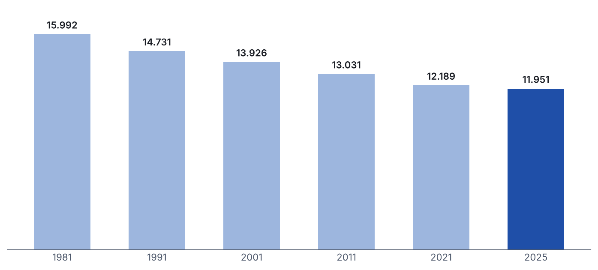
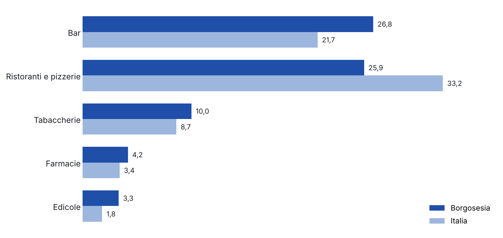

Il problema
A dicembre 2020 avevo mappato Borgosesia (VC) a mano: circa 12.500 residenti stimati, 8.000 in centro e 4.500 tra rioni e frazioni, e 85 esercizi in sei categorie: bar, ristoranti, pizzerie, tabaccherie, farmacie ed edicole.
La domanda di questo aggiornamento: quali di quei numeri reggono una volta sostituiti con i dati ufficiali, e cosa dicono se confrontati con la media italiana?
La soluzione
Quattro passaggi dalla stima ai dati:
Cosa comprende l'analisi


Risultati
- La stima della popolazione era vicina: 12.500 stimati contro 12.250 registrati a fine 2020. Oggi i residenti sono 11.951, un quarto in meno rispetto al 1981
- Il 31,2% dei residenti ha 65 anni o più (2023), contro il 25,1% dell'Italia (2026)
- Le definizioni cambiano la risposta: per l'ISTAT l'84% dei residenti vive nel centro abitato, non il 64% stimato, perché conta come centro anche i rioni attaccati al paese
- Il 24% di bar in più, il 22% di farmacie in più e l'84% di edicole in più per abitante rispetto alla media italiana, ma il 22% di ristoranti e pizzerie in meno
- Prossimo passo: geolocalizzare ogni esercizio e assegnarlo alle sezioni di censimento ISTAT, per avere i rapporti reali tra centro e frazioni
Stack
Questo è un progetto dimostrativo su dati pubblici (ISTAT, InfoCamere/FIPE, Federfarma, SNAG, FIT). Il numero di esercizi viene da un mio conteggio sul campo di dicembre 2020, con le farmacie ricontrollate a novembre 2026. I dati nazionali contano le imprese registrate e non i punti vendita, quindi il confronto è indicativo.